← Back to projects
Embedded Systems · Energy Monitoring · CNC Micro-Milling
CNC Micro-Milling Energy Monitoring System
ESP32-based data acquisition system for real-time monitoring and per-job energy analysis of the X, Y, Z motion axes and spindle of a CNC 6040 platform.
System OverviewMonitoring retrofit
Engineering Problem
How can an open-loop CNC expose what is happening electrically during machining?
- Background
- The CNC 6040 had no existing mechanism for recording electrical consumption or distinguishing the energy contribution of individual motion axes and the spindle.
- Aim
- Develop a retrofit monitoring system that independently observes the X, Y, and Z axis power lines and spindle supply without modifying the Mach3 control loop.
- Result
- Real-time electrical acquisition, per-job energy accumulation, local machining records, and browser-based visualization.
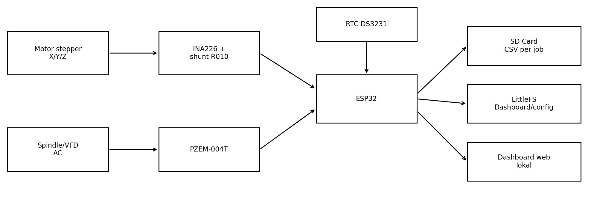
Development Workflow
From machine evaluation to experimental energy analysis
Hardware Architecture
Multi-channel sensing without modifying the CNC controller
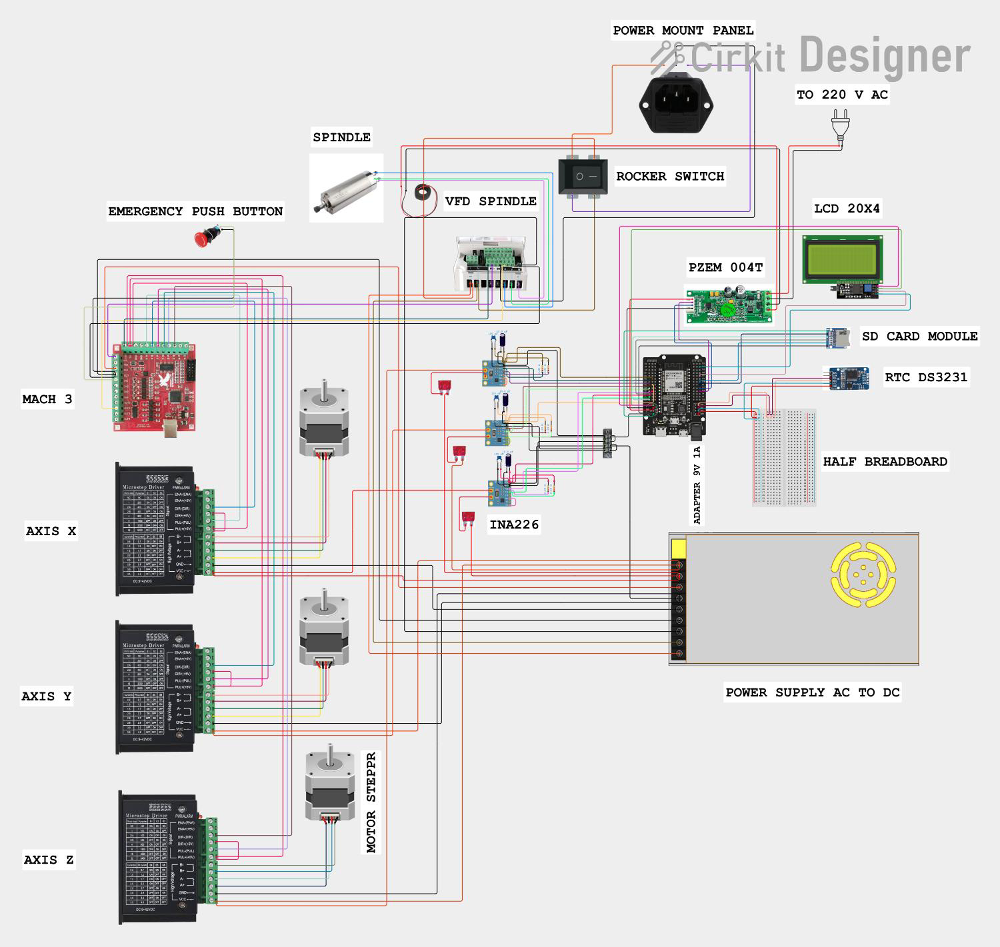
INA226 channels sit between the 24 V DC supply and the axis drivers. The PZEM measures the single-phase AC input to the VFD, not its three-phase motor output. The monitoring system neither controls CNC motion nor reads internal Mach3 variables.
Embedded System
Acquisition, processing, storage, and presentation on one ESP32 platform
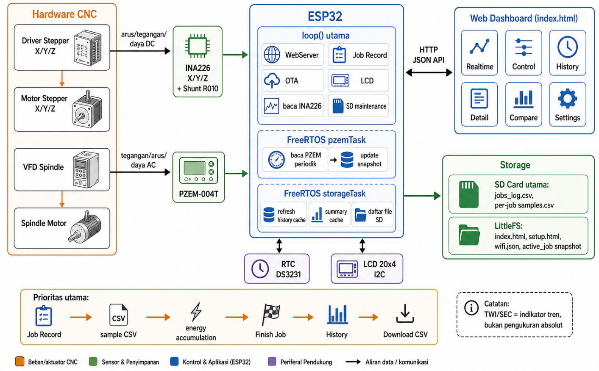
INA226 and PZEM electrical acquisition.
ESP32 processing, job state, discrete power integration, and task separation.
SD-card CSV job records and temporary RAM data for live visualization.
A local browser dashboard served directly from the ESP32.
Firmware uses the ESP32/Arduino/PlatformIO toolchain with I²C, UART, SPI, RTC, LittleFS, WebServer, and SD storage. The local dashboard polls JSON HTTP endpoints; primary job samples and summaries remain on the SD card.
Web Dashboard
Real-time monitoring with per-job history and comparison
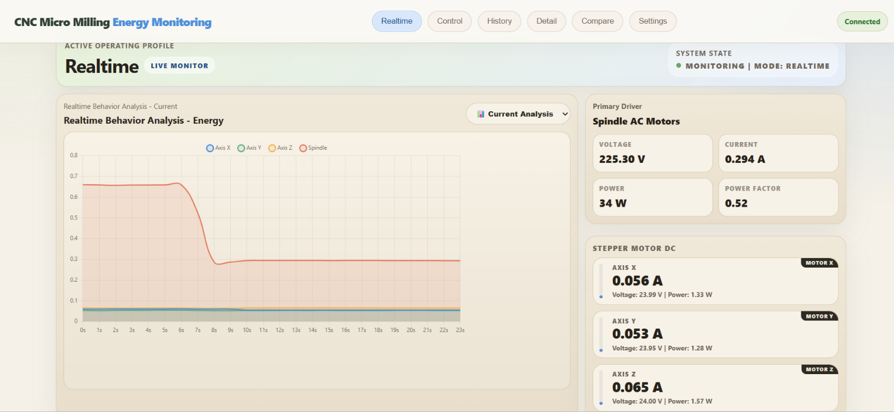
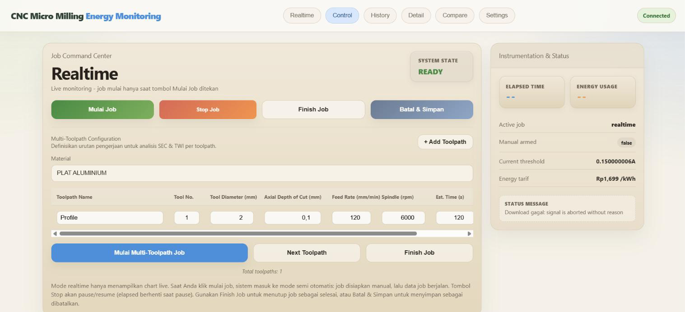
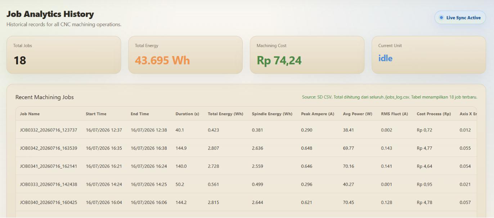
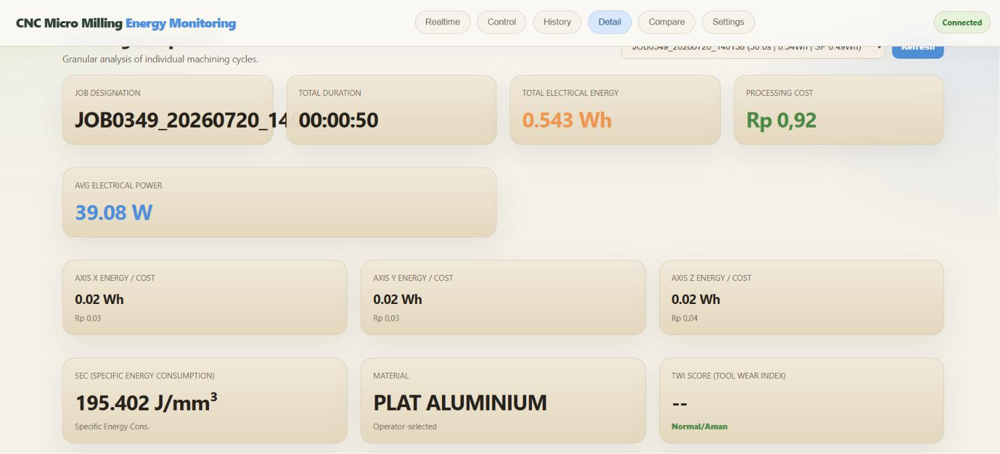
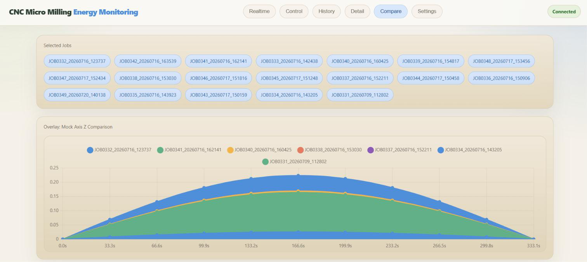
The Control tab manages monitoring and job records, not CNC motion. Detail and Compare use recorded samples when available; fallback graphics support presentation and are not measured data.
TWI and SEC shown in the interface are development indicators, not validated measures of absolute tool wear or cutting efficiency.
System Validation
Electrical response mapped to machine operating states
Validation covered idle/baseline, X-axis jogging, Y-axis jogging, Z-axis jogging, spindle operation without cutting, and active machining.
Measured current and power changes were checked against the active component and operating condition. These tests establish functional response and condition correspondence, rather than laboratory-grade measurement accuracy.
Idle Baseline → Axis Motion → Spindle No-Load → Active Machining
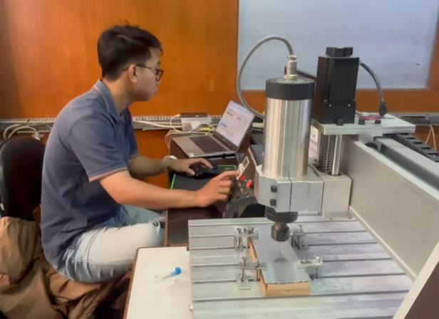
Experimental Application
Using machine-energy data to study PCB micro-machining
The monitoring system was used during FR4 PCB isolation routing and component drilling. A Taguchi L27 design varied spindle speed, feed rate, and depth of cut; the evaluation considered energy consumption, machining time, and dimensional/visual quality.
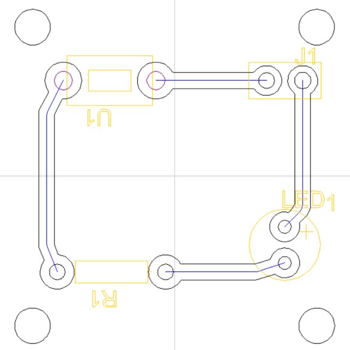
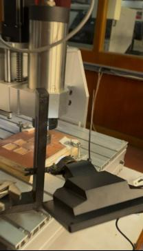
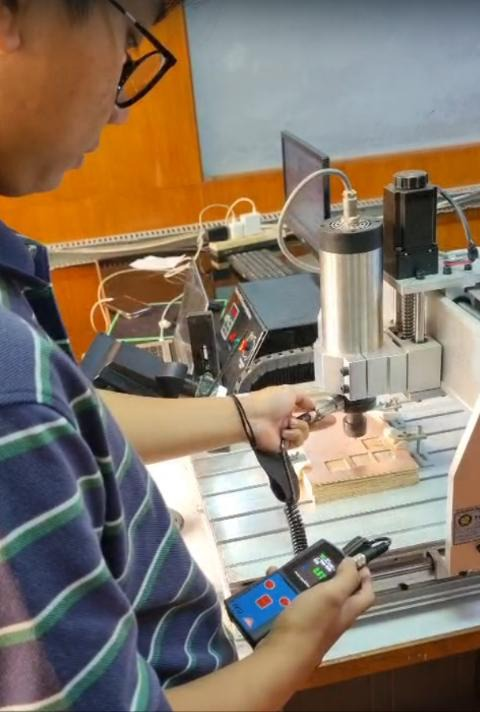
System Capabilities
From electrical samples to traceable machining records
Independent Axis Monitoring
X, Y, and Z electrical channels monitored separately.
Spindle Power Monitoring
AC input to the spindle VFD monitored independently.
Per-Job Energy Recording
Power samples integrated over time and stored as machining-job records.
Process Comparison
Recorded jobs reviewed and compared through the local dashboard.
Technical Documentation
Prototype integration and machine-side verification
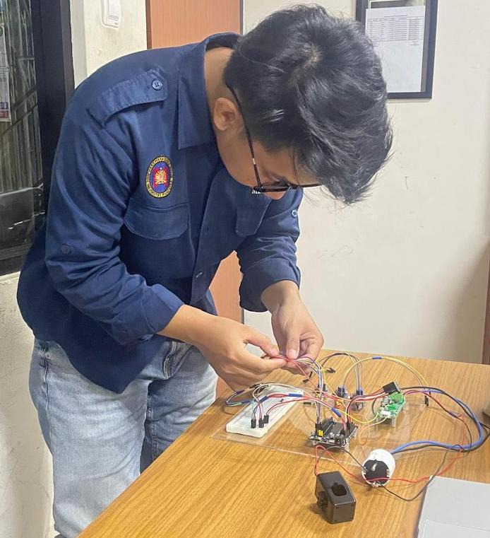
Engineering Takeaway
Turning an open-loop CNC into a measurable manufacturing system
This project demonstrates a low-cost retrofit approach to exposing electrical behavior on a laboratory CNC platform. Independent axis and spindle sensing, embedded processing, local storage, and a browser interface create a traceable record of energy use throughout each machining job.
The platform can support process comparison, energy-efficiency studies, and future machine-condition analysis without accessing the CNC controller’s internal data.
Future directions
Higher-Rate Data AcquisitionAdditional Process SensorsAutomated Condition ClassificationNetworked Data Logging